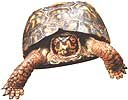

By midspring, many of us living around freshwater or forests will notice turtles out and about. Actually, five of the six families of turtles are sea creatures that most people never get to see. But I'd like to concentrate on the land turtles, or "tortoises," and specifically on one of the most remarkable: the box turtle. Of course the most amazing thing about turtles is that their ribs have grown out to form a more or less protective shell around them. But no species has taken this further than the box turtle.
It's shell (or carapace) is highly vaulted, almost spherical, and the shell underneath the belly (the plastron) has a hinge running across it. This arrangement allows the box turtle to pull head, legs, and tail completely within the shell (the legs of turtles are attached within the ribs). In some individual box turtles, the shell closes up so tight that not even a knife blade can slip in. There is no other species on earth even remotely like it.
The longevity of turtles is also remarkable. This seems especially surprising for such a relatively small species. Box turtles have a life span much like that of humans: They are not fully grown until about 20 years old, and many have lived to be 70 or 80, with a few probably reaching 100. It's strange to think of the same 6"-long creatures plodding the woodlands around where you live, decade after decade, for an entire human lifetime. But then again, I plod along fairly regularly myself.
The Eastern Box Turtle is common across much of the eastern US., but there are a few other species and subspecies of box turtle sharing its range-and extending that range west of the Appalacians and even to the southwest. You are unlikely to confuse a box turtle for another kind; a more interesting trick, however, is distinguishing a male from a female. If you can get a close enough look before the turtle withdraws into the shell, check the eyes: The male's are usually a bright red, while the female's are brown or dark red. A more certain, if less easy, distinction is a concave area in the plastron of the male.
In cold climates, turtles dig down in the mud or dirt to hibernate. The box turtle produces about five eggs,which it immediately buries. When the babies hatch, they have little bumps down the spine of the carapace: Some vestige of these bumps can still be seen in some adults. Box turtles, young or old, are said to make good pets. An expert guide says they do well eating dog food, though I imagine their free roaming diet is infinitely preferable.
Not everyone likes daylight saving time. Some people argue that the amount of money, energy, and-well, time-spent in having to reset timepieces greatly outweighs this invention's benefits. The issue of when to "spring forward" one hour in spring and "fall back" one hour in fall was fought over fiercely in the 1970s, with Congress wildly changing the spring-forward day in 1974-76. Other than in those years, the law between 1966 and 1986 was for the spring-forward day to be the last Sunday in April. But ever since 1986, the day to make the change has been the first Sunday in April. (In Britain, where it is called "summer time," the change is made on the last Sunday in March.)
What's most interesting is that some parts of the U.S. do not use daylight saving time at all. American Samoa, Puerto Rico, the Virgin Islands, and Hawaii don't use it, no doubt partly because they are closer to the equator than the rest of the U.S. is (the closer you get to the equator, the less the length of day changes during the year). Arizona also doesn't use daylight saving time-even though its neighboring states do-but at least it is closer to the equator than most of the U.S. is. Indiana has one of the most unusual relationships between state and daylight saving time: Most of this rather northerly state doesn't use daylight saving time-but some of it does.
Comet Hale-Bopp should have been reasonably prominent to the naked eye in January, February, and early March-but only in the lonely, early, cold hour before dawn. If your weather has been cloudy in the second half of March, when Hale-Bopp started getting higher in the north west after each sunset, perhaps you haven't seen the eerie object yet.
The first weekend in April is likely to provide the best all-around chance to view Hale-Bopp. Whether or not the weekend of Friday, April 4, through Sunday, April 6, gets officially recognized as International Hale-Bopp Weekend, this is the time when the comet's head will be highest in the evening sky for most viewers in the U.S., Europe, and many other highly populated parts of the world. The comet is likely to have faded only very slightly and its tail gotten only slightly shorter since late March-or brightness and tail might even be at their very best.
When you consider that the first weekend of April is also excellent for early evening observing of the planets Mars and Mercury, you can understand why this may be a tremendous time for amateur astronomy clubs to turn people on to the thrills of skywatching. Instructions for how to find Mercury appear in our accompanying almanac timetable. Mars will be impossible not to find: It will be the brightest golden-orange light in the sky, burning prominently in the southeast at April nightfalls.
Last year, several NASA researchers made headline news when they announced that evidence showed ancient fossils of something resembling bacteria in a meteorite may have come from Mars. Right now, two American spacecraft-one bearing a tiny automated surface rover-are on their way to visit the Red Planet.
I'll have more to say about these missions to Mars when they arrive there this summer. By then, Mars will still be visible in the evening sky but will have dimmed a lot. In April, it continues to outshine the stars and appears big enough to show a polar cap or hood of clouds and a few dark markings-if you have access to a telescope and the atmosphere is steady that night. (The higher Mars is in the sky, the steadier its image should appear, so keep looking through your telescope late in the evening until the planet is highest in the south.)
This is the spring of one of Mars's rela tively close approaches. But there will be other years when it comes near. On the other hand, if you don't get a good look at Comet Hale-Bopp this April and May, you'll have to wait quite a while for it to come back-3,400 years! (The previous return of this huge comet was in about 2,200 B.C.-possibly the time that Stonehenge was being built, and a few centuries after the Great Pyramid of Khufu in Egypt was raised.)
What we hope to be seeing in April is a fuzzy patch of light-the comet's head, possibly bearing a bright starlike point or dot in its center, and a curved sweep of brilliant tail, pointing mostly upward. The head may be brighter than anything but Mars and the star Sirius (even brighter than this is possible). The tail may be bright enough for much of it to be visible by early in twilight, or even from the middle of big cities. (Nevertheless, a comet looks much better many miles from city lights. To learn more about how we can save money and the starry sky, and make our streets safer by reducing "light pollution"-excessive or misdirected outdoor lighting-write to the International DarkSky Association at IDA, 3545 N. Stewart, Tucson, AZ 85716.)
From about April 12 to 23, bright moonlight will hamper us from getting the best possible views of the comet. Then, in late April and early May, the receding comet will probably appear noticeably dimmer and shorter. There is, however, hope that Hale-Bopp will still be impressively bright on the evening of May 8, when viewers all over North America will get to see the potentially stunning sight of the comet poised not far to the upper right of a lovely slender crescent moon. By late May, Hale-Bopp will be setting too soon after the sun to be detected. But it may have left us with memories of a spring of wonder that will not soon fade.
For the comet lovers out there, Fred's book, Comet of the Century is available from Springer Verlag Publishers. Call 800-SPRINGER.
|
 March to May 1997 sky locations of Hale-Bopp and bright solar system objects an hour after sunset at 40° N. Tail lengths are fairly speculative. (10' is the width of your fist held out at arm's length.) |
|
|